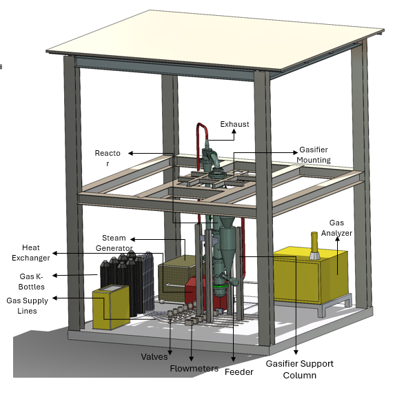
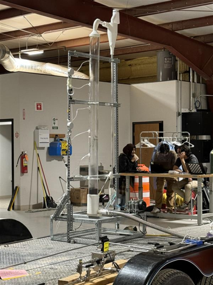

Building the next generation of smart energy research.
We develop experimental, computational, and data-driven tools for advanced energy conversion systems, with a focus on sustainable fuels, reactor design, and digital engineering.
03+
12+
Who we are
Our group works at the intersection of thermo-fluids, energy conversion, multiphase transport, and computational modeling. We combine experiments, simulation, and systems-level thinking to solve practical engineering problems in advanced energy technologies.
What we work on
Thermochemical Conversion
Experimental and computational work on gasification, combustion, rare earth mineral recovery, and hydrogen-rich syngas production from waste-derived and biomass feedstocks.
CFD and Multiphase Modeling
High-fidelity modeling of fluidized beds, cyclones, heat transfer, species transport, and reactor-scale flow behavior.
Digital Engineering and Twin Development
Reduced-order models, data integration, and digital twin workflows for pilot-scale energy systems.
Energy Systems Analysis
Techno-economic, sustainability, and process-integration studies for next-generation energy conversion systems.
Featured work

Pressurized CFB Gasifier
Pilot-scale reactor development for hydrogen-rich syngas and waste-to-energy applications.

Cold-Flow Hydrodynamics
Scaled experimental studies to validate circulation, pressure behavior, and reactor design assumptions.

Digital Twin Framework
Connecting simulation, reduced-order models, and experimental measurements for real-time insight.